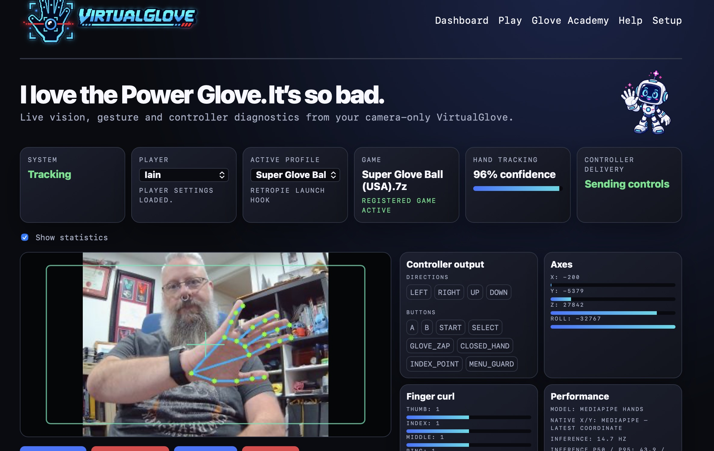

Playable, not performative
The project should work in an actual game, survive a reboot, release controls safely, and coexist with the controller already in someone’s hands.
About the project
VirtualGlove grew out of a conversation about early game consoles, my home arcade work, and one stubborn question: could the Power Glove idea be made genuinely playable without asking anyone to wear decades-old electronics?
I wanted to keep the strange optimism of the original idea—the feeling that moving your hand could control a game—while replacing the parts that made it frustrating.

VirtualGlove began with a conversation with a friend about handheld game consoles from the late 1970s and early 1980s—machines built from logic chips and LEDs. I was thinking about building an embedded game system that explored gesture and voice recognition when the Power Glove came up.
That was the light-bulb moment: what if modern, camera-based gesture recognition could emulate the Power Glove? Could we preserve the idea without relying on the original glove hardware?
It turns out we could—and we did. A camera watches an ordinary hand, the Arduino UNO Q recognises its movement and gestures, and the console receives controls it already understands. Familiar games use joystick input, while Super Glove Ball can receive native Power Glove input.
For me, that makes VirtualGlove as much about preservation as invention: it preserves a wonderfully strange side quest in retrogaming history—and gives it another chance to be played.
The original manuals shaped the program mappings, and emulator behaviour was traced and tested rather than guessed. Physical joypads remain available because experimenting with motion controls should never trap someone in a game or make an arcade cabinet harder to use.
My arcade cabinet has become a labour of love, and VirtualGlove is my way of giving something back to the emulation community—helping an ingenious, quirky controller concept, and the games designed for it, live on.
Where it started
I’ve been a retrogaming enthusiast for as long as I can remember. I started with a Timex Sinclair 1000, moved on to a Commodore 64, and later bought my own Amiga 500. That fascination with computers led to a degree in Computer Science—and, in one way or another, everything since.
The project should work in an actual game, survive a reboot, release controls safely, and coexist with the controller already in someone’s hands.
The code, research trail, build tools, manuals, enclosure files, and third-party notices are available for people who want to learn from or improve the work.
Camera-only control removes electronics from the hand and gives players another way to approach games, while always preserving a physical-controller path.
Still evolving
VirtualGlove has been tested across RetroPie, Recalbox, Batocera, and LaunchBox, with different controllers, emulator cores, cameras, and enclosure revisions. The documentation records what worked, what failed, and why the current design behaves as it does.